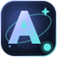
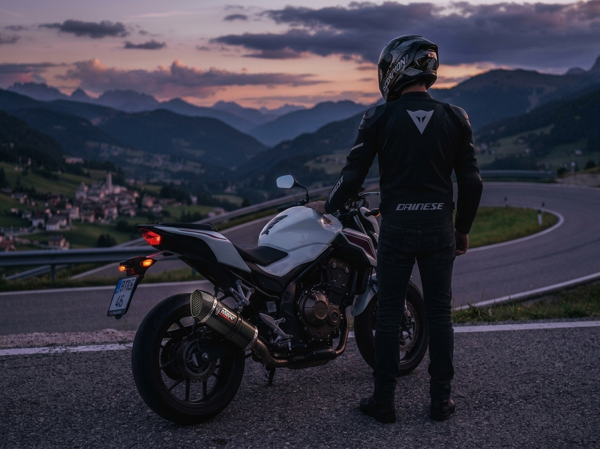
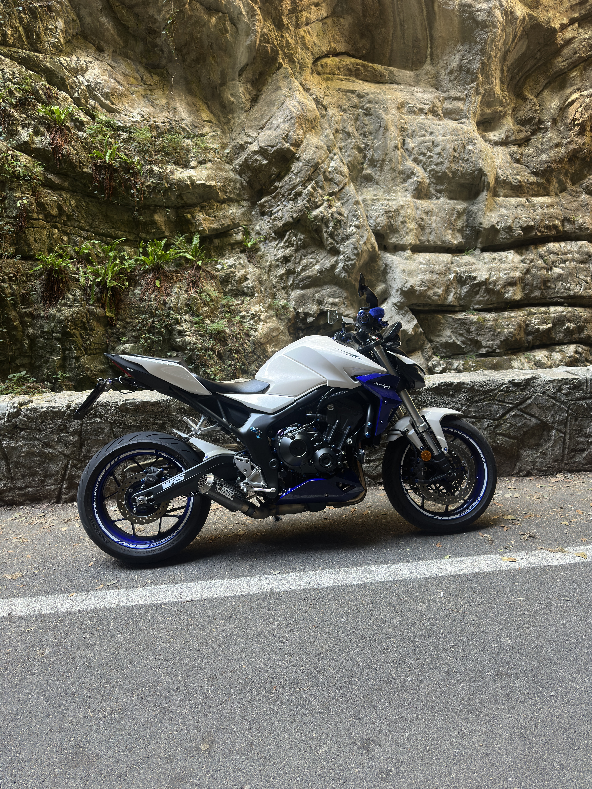

Imparare facendo
Mettere le mani in pasta, testare e capire cosa può essere migliorato.

ANDREI STREPCIUCSono Andrei. Mi piace capire come funzionano le cose, trasformare le idee in progetti concreti e scoprire nuove strade tra tecnologia, motori e creatività.

Ho studiato informatica gestionale e programmo in C# e SQL, ma sono cresciuto anche tra motori e attrezzi: lavoro in officina e mi piace sapere cosa succede sotto la carrozzeria, che sia di una moto o di un'applicazione.
Questo sito raccoglie quello che faccio e che sto imparando: qualche progetto, qualche passione e un minigioco che ho scritto per divertimento. Credo nel provare, sbagliare e correggere.
Mettere le mani in pasta, testare e capire cosa può essere migliorato.
Passare dall'idea alla pratica, senza aspettare il momento perfetto.
Costruire competenze e opportunità un piccolo passo alla volta.

La strada, la tecnica e quella sensazione di libertà che arriva quando si parte.
RIDE · EXPLORE · REPEATStrumenti online, automazioni e modi più intelligenti per risolvere problemi.
WEB · BUILD · INNOVATEEssere presenti, collaborare e contribuire a qualcosa che va oltre sé stessi.
TEAMWORK · COMMUNITYDue cose che ho costruito: una per risolvere un problema reale, l'altra la stai guardando adesso.
Un flusso digitale che unisce un modulo online, automazioni e un foglio dati per aiutare gli automobilisti a ricordarsi una scadenza importante.
Portfolio scritto a mano in HTML, CSS e JavaScript, senza framework. Include Neon Ride, un minigioco arcade con la moto disegnato su canvas, con punteggio e record salvato nel browser.
Sto mettendo in pratica C#, ASP.NET Core e SQL Server in una piccola applicazione web con database, per passare dagli esercizi a qualcosa che funziona davvero. Questa sezione verrà aggiornata con il codice e una demo.
✳ I progetti descritti sono una panoramica personale: non sono promesse di risultati né offerte commerciali.
Se ti interessa uno dei miei progetti, hai una proposta o vuoi semplicemente scambiare idee, scrivimi.
Contattami↗Hai un progetto in mente o vuoi collaborare? Scrivimi, sarò felice di parlarne con te.